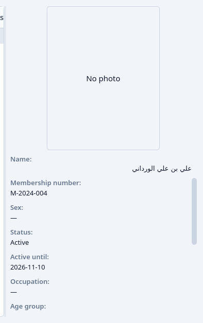
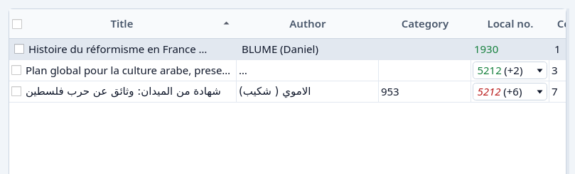

Reference
Fields, member status, loan states, the Archive, and local numbers.
Book fields
The Book tab of Add Book:
- Title — required.
- Author
- Publisher
- Category — pick one, or (none). Categories… opens the list of categories.
- ISBN
- Publication date
- Place of publication
- Pages
- Language — required. Arabic, French, English, and the other listed languages, or another language typed in.
- Dimensions
- Description — From image can fill this, and the title and author, from a clear photograph of the book. It may be unavailable.
- Cover — Choose cover image…
The Copies tab, one line per copy:
- Local no. — the library's own number for this copy. See Local numbers.
- Global no. — filled from the local number when the copy is saved.
- Stock — Arabic or Foreign, following the book's language.
- Central no. — the national number, when the copy has one. The library does not mint it.
- Classification
- Subject
- Index
- Location
- Inventory
- Compensation
- Notes
- Status
Add copy appends a line. Remove copy archives the highlighted line. A copy that is still out cannot be removed.
Member fields
- Membership number — given by the application, and not edited.
- Status — Active or Not active. See Member status.
- Active until — the last day the member is active. The application sets it. You read it.
- First name — required.
- Last name — required.
- Date of birth — required, picked as day, month, and year. The age group follows from it: under 30 is Youth, and the 30th birthday is Adults. A future date is refused.
- Sex
- Occupation
- Phone
- Address
- City
- Photo — Choose photo…
- ID image — Choose ID image…
- Notes
Member status
A member is Active on a day when Active until is that day or a later day. Otherwise the member is Not active.


Registering a member, or setting the status back to Active, sets the last active day to one year ahead, less a day. Choosing Not active ends it yesterday. Only an Active member can borrow. The Circulation checkout offers no one else.
Nothing changes the status by itself when the last active day passes. The next time the member is opened, the status already reads Not active.
Loan states
A loan is in exactly one state.
- Open — not returned, and due today or later.
- Overdue — not returned, and the due day has passed.
- Returned — the copy is back.
Open does not include Overdue. The Circulation filter and the Metrics tile of the same name follow this split.

The usual loan is 14 days. Checkout suggests a due day 14 days after the day it goes out. You can change that day before saving. Extend suggests a new due day after the current one.
Live, archived, and gone
Delete does not destroy a title, a copy, a member, or a loan. It archives it. The list you were on no longer shows it. The Archive does.
Restore brings an archived title, copy, member, or loan back to the live lists.
Permanently remove is only in the Archive, and only once the order allows it. After that the record is gone and cannot be restored.
An archived loan still counts. It still stops a member or a copy from being permanently removed, and it still appears in a book's or a member's Loans history.
Local numbers
The local number is this library's own number for a copy. It is unique among Arabic stock, and unique among Foreign stock: the same number may belong to one Arabic copy and one Foreign copy. The central number is a national serial. It is stored when a copy has one, and this application does not assign a new one.
A title with one copy shows that number. A title with several shows that number, then the count of the further copies in parentheses. The drop-down lists every copy. Choosing one marks it in the cell until the list is loaded again. It does not reorder the copies.


Green is on the shelf. Red and italic is out on loan. The italic is the cue that remains in a greyscale print, and for a reader who does not separate red from green. Only the number the cell is speaking for is coloured. The count beside it stays neutral.
Search by a local number finds the title. An exact number wins. A prefix is used only when no copy has that number exactly. See Catalogue.